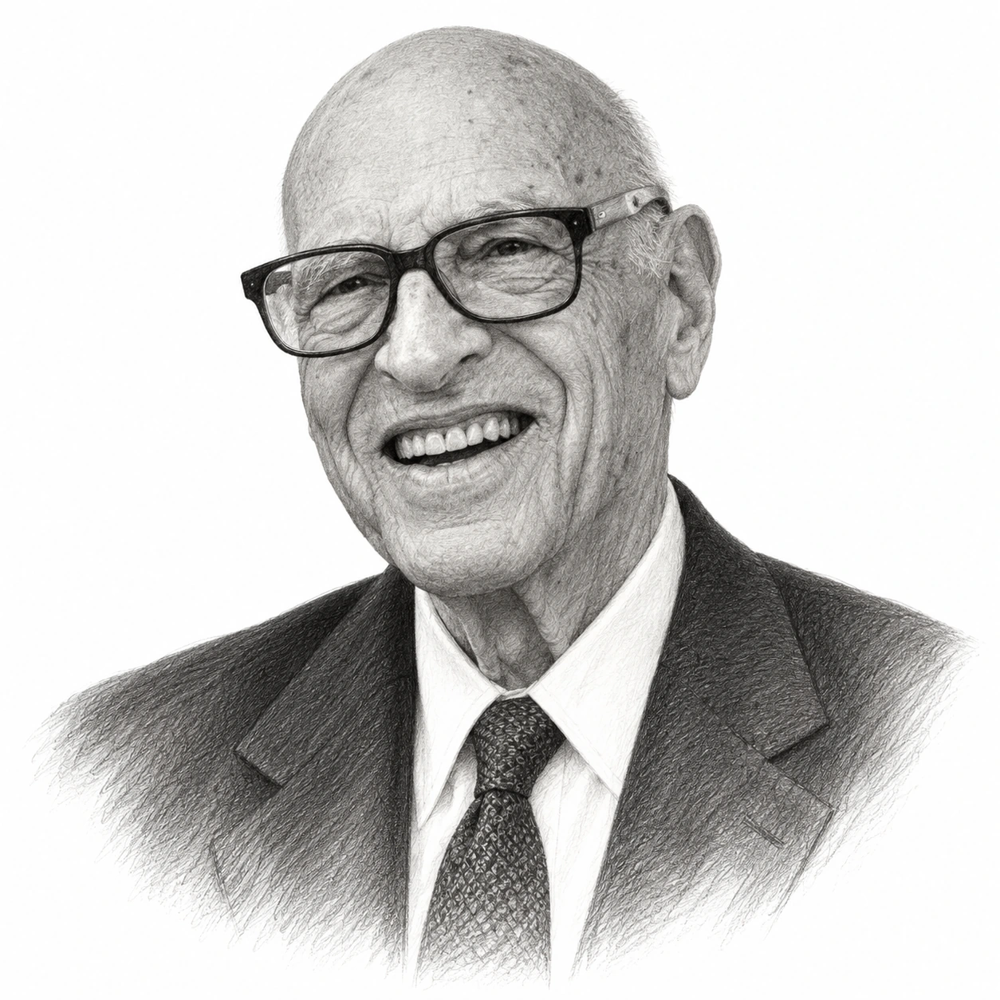
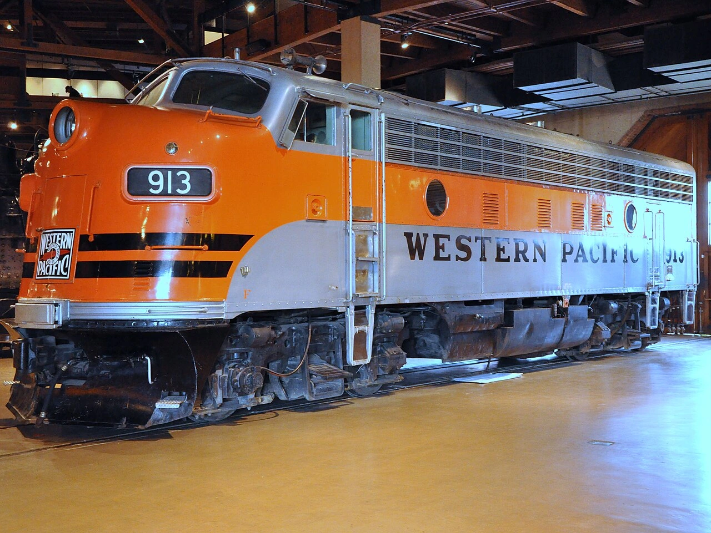

Walter Schloss was born in New York on 28 August 1916 and grew up on the Upper West Side of Manhattan, where his parents, Jerome and Evelyn Schloss, his sister and his grandmother shared a three-bedroom apartment on West End Avenue. The family's money ran out in the 1930s, so that when Walter Schloss left the Franklin School in 1934 there was no question of university, and his son Edwin later said that those early losses, like Benjamin Graham's, made him a very conservative investor.
He went straight to work, and the job he found, in 1935, was as a runner at Carl M. Loeb & Co., carrying securities around Wall Street by hand, which he got through Armand Erpf, a partner at the firm and a friend of his mother. After a few months he asked Armand Erpf how he might get into the "statistical department", and the answer was to read a book just published by a man named Benjamin Graham. "Read the book and when you know everything in it, you won't have to read anything else," Armand Erpf told him, and Walter Schloss took the advice, enrolling at the same time in evening courses in accounting and finance at the New York Stock Exchange Institute, later the New York Institute of Finance.

Those courses qualified him for Benjamin Graham's own evening class in security analysis, where he learned to look for companies whose shares sold for less than their net working capital, meaning current assets less all liabilities. "Ben was a great believer in buying a diversified group of securities, so that he limited his risk," Mr Schloss recalled. "He was badly hurt by the Depression, and he didn't want to do that again."
Walter Schloss enlisted in the US Army within days of the attack on Pearl Harbor in December 1941 and served as a Signal Corps code clerk, first in Iran and then, after a commission as a second lieutenant, at the Pentagon. He kept in touch with Benjamin Graham by postcard and letter throughout, and while he was still in uniform Benjamin Graham offered him a job as a security analyst at the Graham-Newman Corporation, which he joined on 2 January 1946, the same year he married Louise Filer, with whom he had two children, Edwin and Stephanie.
Graham-Newman had total assets of just $1.4m when he arrived, and his work there was to find shares selling below working capital, which also taught him what a thin margin looked like in practice, because he remembered purchasing Brewster Aeronautical at around $5 to $5.25 a share against a liquidation value of about $5.75 and making perhaps 50 cents a share over two years. "It was really a lousy investment," he told Outstanding Investor Digest in 1989. "It was such a sweat and the margin was so small." In 1954 a 23-year-old Warren Buffett joined the firm, which by Mr Buffett's account had three partners and "four of us at the 'peasant' level", and although Walter Schloss was 14 years older, the two became friends and bridge partners for the rest of his life.
When Benjamin Graham decided to retire to California in 1955, Walter Schloss decided to go into business for himself. "I think he was kind of bored," he said later. "I said, 'If he's going to retire, I might as well go into business for myself.' So, I got myself 19 partners and they each put up $5,000. One guy put up $10,000." That gave Walter J. Schloss Associates around $100,000 to invest, and a fee structure that stayed in place for 47 years, because there was no management fee at all. "I wanted to be in the same position as my partners," Mr Schloss explained. "So, I got 25% of the realized profits, but that's it. If the market went down, we would have to make up the loss until my partners were whole."
The partnership operated from a desk inside the offices of Tweedy, Browne, the brokerage that had executed Benjamin Graham's orders from the same floor at 52 Wall Street, and although Mr Schloss said that "when Howard Browne let me have a desk in his office, he never thought I'd still be there 40 years later", the arrangement in fact lasted more than 50 years. The partnership's first full year, 1956, is where its published record begins.
Walter Schloss looked up figures in the printed manuals and Value Line, sent for annual reports and purchased shares that sold below their book value, their working capital or both, across so many companies that by 1984 the partnership had owned more than 800 different issues and usually held at least 100 at a time. He rarely spoke to the people who ran them, because, as he said in 1989, "I think I agree with Ben Graham. He didn't like to speak with management because he thought he would be influenced by what they said." Similarly, he preferred the balance sheet to the income statement, and when asked why assets rather than earnings, his answer was that "assets seem to change less than earnings."
A good example of how this worked was Western Pacific, the railway, whose shares the partnership purchased at $6 to $6.50 as they fell from $23 with what Mr Schloss called "a lousy outlook". The company then purchased Veeder-Root, which made the counters on petrol pumps, and when petrol went above 99 cents a gallon in the 1970s every two-digit counter in the country had to be replaced. "I never thought they'd have all these great things happen," he said. "In retrospect, we didn't buy nearly as much as we should have."

The record was not smooth, and cheap shares did not protect the partnership in every falling market. In 1969 and 1970 the limited partners lost 9.0% and then 8.2% while the S&P 500, with dividends, fell 7.5% and then rose 2.4%, whereas in the harder bear market of 1973 and 1974 they lost 8.0% and 6.2% against falls of 14.8% and 26.6% in the index, and in 1975 they gained 42.7%. It was in 1973 that Edwin Schloss, who had taken a degree in playwriting before studying security analysis, joined his father, and the firm became Walter & Edwin Schloss Associates. The year before, the writer "Adam Smith" had described him in Supermoney as a man who "has no connections or access to useful information."
That changed on 17 May 1984, when Warren Buffett spoke at Columbia Business School and made Walter Schloss the first of his "Superinvestors of Graham-and-Doddsville". The table Mr Buffett published covered the 28 and a quarter years from 1956 to the first quarter of 1984, during which the partnership compounded at 21.3% a year before the general partner's share, the limited partners received 16.1% a year after it, and the S&P 500, with dividends reinvested, returned 8.4% a year. Putting this another way, $1 placed with the partnership in 1956 had become around $68 for a limited partner by 1984, whereas the same dollar in the index had become just under $10. "He simply says, if a business is worth a dollar and I can buy it for 40 cents, something good may happen to me," said Mr Buffett. "And he does it over and over and over again."
When Outstanding Investor Digest asked the two Schlosses in 1989 how they would summarise their approach, Edwin Schloss replied: "We try to buy stocks cheap." However, the same interview recorded that companies selling below working capital had largely disappeared by 1960, so that the partnership had moved on to discounts to book value and then to book value itself, and Walter Schloss admitted that "we don't see much that's cheap now." The costs of the business stayed tiny, so that in 1993 its office expenses came to $11,000 against net income for the fund of $19m.
In March 1994 Walter Schloss typed out a one-page memo headed "Factors needed to make money in the stock market", which listed 16 of them, beginning with "Price is the most important factor to use in relation to value." He advised using book value as a starting point, making sure that debt did not equal 100% of equity, and buying near the low of the past few years, and of assets and earnings he wrote: "Try to buy assets at a discount than to buy earnings. Earnings can change dramatically in a short time. Usually assets change slowly." The last factor was the shortest: "Be careful of leverage. It can go against you." Mr Schloss summed the same attitude up over many years by saying simply, "I don't like to lose money."
The end came after the technology boom, because, as Mr Schloss recalled, "when Edwin said to me in 2001 that he couldn't find any cheap stocks, and that was a great call, it was a great excuse for us to quit", adding that whenever his list of possible purchases fell below five names the market was too high, "and when it gets down to two or three it's a danger signal." Father and son liquidated the fund over the following two years, gaining a further 11.6% and 5.7% while the wider market fell, and finished in 2002. According to the profile published by Financial History in 2021, the partnership had grown from $100,000 to around $130m even though it paid out most of its realised gains to partners each year.

Warren Buffett returned to the subject in his letter to Berkshire Hathaway shareholders for 2006, after Walter Schloss turned 90. "From 1956 to 2002, Walter managed a remarkably successful investment partnership, from which he took not a dime unless his investors made money," Mr Buffett wrote, noting that the record had been built across about 1,000 securities, "mostly of a lackluster type", so that a few big winners could not explain it. "There is simply no possibility that what Walter achieved over 47 years was due to chance," Mr Buffett concluded, before observing that "maybe it was a good thing for his investors that Walter didn't go to college."
However, those closest to the record were careful about what it did and did not prove. Will Browne of Tweedy, Browne later observed that the approach "was tilted toward asset type business, but that was most likely a function of the period in which Walter was most active", and the figures are those of a small partnership that paid out its gains and dealt in shares a large fund could not have purchased in size, so that a compound rate earned between 1956 and 2002 describes the past rather than forecasting anything. Walter Schloss himself remarked near the end that "we would have done better if we just had bought Berkshire Hathaway stock and held on", to which Edwin Schloss replied that "we would not have had so much fun!"
His wife Louise died in 2000, and a year later he married Ann Pearson, while continuing to invest for his family, and in 2006 the New York Society of Security Analysts marked his 90th birthday with a dinner attended by more than 100 of his friends and partners. Walter Schloss died of leukaemia at his home in Manhattan on 19 February 2012, aged 95. "His fiduciary sense was every bit the equal of his investment skills," Warren Buffett said afterwards.
The record
| Year | S&P 500, with dividends | Schloss limited partners | Schloss partnership, overall |
|---|---|---|---|
| 1956 | +7.5% | +5.1% | +6.8% |
| 1957 | −10.5% | −4.7% | −4.7% |
| 1958 | +42.1% | +42.1% | +54.6% |
| 1959 | +12.7% | +17.5% | +23.3% |
| 1960 | −1.6% | +7.0% | +9.3% |
| 1961 | +26.4% | +21.6% | +28.8% |
| 1962 | −10.2% | +8.3% | +11.1% |
| 1963 | +23.3% | +15.1% | +20.1% |
| 1964 | +16.5% | +17.1% | +22.8% |
| 1965 | +13.1% | +26.8% | +35.7% |
| 1966 | −10.4% | +0.5% | +0.7% |
| 1967 | +26.8% | +25.8% | +34.4% |
| 1968 | +10.6% | +26.6% | +35.5% |
| 1969 | −7.5% | −9.0% | −9.0% |
| 1970 | +2.4% | −8.2% | −8.2% |
| 1971 | +14.9% | +25.5% | +28.3% |
| 1972 | +19.8% | +11.6% | +15.5% |
| 1973 | −14.8% | −8.0% | −8.0% |
| 1974 | −26.6% | −6.2% | −6.2% |
| 1975 | +36.9% | +42.7% | +52.2% |
| 1976 | +22.4% | +29.4% | +39.2% |
| 1977 | −8.6% | +25.8% | +34.4% |
| 1978 | +7.0% | +36.6% | +48.8% |
| 1979 | +17.6% | +29.8% | +39.7% |
| 1980 | +32.1% | +23.3% | +31.1% |
| 1981 | +6.7% | +18.4% | +24.5% |
| 1982 | +20.2% | +24.1% | +32.1% |
| 1983 | +22.8% | +38.4% | +51.2% |
| 1984, first quarter | +2.3% | +0.8% | +1.1% |
| 1956–Q1 1984, compounded annually | 8.4% | 16.1% | 21.3% |
| 1956–Q1 1984, overall gain | 887.2% | 6,678.8% | 23,104.7% |
Figures are from Table 1 of Warren Buffett's 1984 article "The Superinvestors of Graham-and-Doddsville", in US dollars, covering 28 and a quarter years. "Overall" is the return of the partnership before the general partner's 25% share of realised profits, and "limited partners" is what the outside investors received after it; there was no fixed management fee. The S&P 500 column includes dividends. The partnership continued until 2002, and the later figures are not from Mr Buffett's table: Outstanding Investor Digest published figures supplied by the partnership for the 33 years to the end of 1988 of 21.6% a year gross and 16.4% a year net against 9.8% for the S&P 500, and the Financial History profile of 2021 gives 15.7% a year for the limited partners over the 45 years to 31 December 2000 against 11.2% for the S&P Industrial Average, with seven losing years in 45 and a worst year of −12.8% in 1990. Other published accounts give the 45-year figure as 15.3% against 11.5% for the S&P 500, and Bloomberg's obituary quoted Mr Schloss's own estimate of around 16% a year after fees against 10% for the index from 1955 to 2002. These later figures have not been verified against partnership documents and should be read as approximate. None of them is a forecast.
Life in dates
- 1916Born in New York on 28 August.
- 1934Leaves the Franklin School and goes straight to work.
- 1935Becomes a runner at Carl M. Loeb & Co.; reads Security Analysis and begins evening classes at the New York Stock Exchange Institute, including Benjamin Graham's course.
- 1941Enlists in the US Army in December, days after Pearl Harbor; serves in Iran and later at the Pentagon.
- 1946Joins Graham-Newman as a security analyst on 2 January; marries Louise Filer.
- 1948Graham-Newman purchases half of GEICO for $712,000.
- 1954Warren Buffett joins Graham-Newman.
- 1955Benjamin Graham retires; Walter J. Schloss Associates is formed with 19 partners and around $100,000, working from a desk at Tweedy, Browne.
- 1956First full year of the published record.
- 1968Attends the gathering of Benjamin Graham's former pupils at La Jolla, California, with Warren Buffett and Charlie Munger.
- 1972Described in "Adam Smith's" Supermoney.
- 1973Edwin Schloss joins; the firm becomes Walter & Edwin Schloss Associates.
- 1973–74Limited partners lose 8.0% and 6.2% while the S&P 500 falls 14.8% and 26.6%.
- 1984Named first among Warren Buffett's "Superinvestors of Graham-and-Doddsville" at Columbia Business School on 17 May.
- 1989The Outstanding Investor Digest interview: "We try to buy stocks cheap."
- 1994Types the one-page memo of 16 "Factors needed to make money in the stock market", dated 10 March.
- 2000Louise Schloss dies.
- 2001Edwin Schloss says he can find no cheap shares; the decision to liquidate is taken. Walter Schloss marries Ann Pearson.
- 2002Liquidation of the partnership completed.
- 2006The New York Society of Security Analysts marks his 90th birthday; Warren Buffett's letter for 2006 pays tribute to him.
- 2008Speaks to value investing students at the Ivey Business School on 12 February, aged 91.
- 2012Dies in Manhattan on 19 February, aged 95.
Sources
- Warren Buffett, "The Superinvestors of Graham-and-Doddsville" (1984): Table 1 and all 1956–84 performance figures; Graham-Newman "peasant" level; night course at the New York Institute of Finance; "worth a dollar... 40 cents"; 800 issues and 100 positions; the Supermoney passage.
- Columbia Business School, "The Superinvestors of Graham-and-Doddsville": date of the talk, 17 May 1984.
- James Russell Kelly, "Walter J. Schloss: A Superinvestor of Graham-and-Doddsville", Financial History, Fall 2021 (Museum of American Finance / Fordham Gabelli Center): family and upbringing; Franklin School 1934; Loeb runner 1935 and Armand Erpf; Graham's classes; war service; Graham-Newman from 2 January 1946; GEICO; the 19 partners and fee structure quotations; Tweedy, Browne desk; 1993 office costs; the 16 factors; Edwin's background; 2001 decision and liquidation; 45-year figures; NYSSA 2006; Will Browne's comment; Berkshire remark; later life and death.
- Walter and Edwin Schloss, interview in Outstanding Investor Digest, 6 March 1989: Brewster Aeronautical; Western Pacific and Veeder-Root; "We try to buy stocks cheap"; "assets seem to change less than earnings"; not speaking to management; disappearance of working-capital stocks; 1956–88 figures.
- Warren Buffett, letter to Berkshire Hathaway shareholders for 2006: the tribute, 1956–2002, "not a dime", about 1,000 securities, "47 partnership years", college remark.
- Bloomberg obituary, as carried by InvestmentNews, 27 February 2012: birth on 28 August 1916; death on 19 February 2012 of leukaemia, aged 95; $100,000 from 19 investors in 1955; Buffett's "fiduciary sense" statement; his own estimate of 16% after fees.
- Walter Schloss, "Factors needed to make money in the stock market", 10 March 1994, as reproduced by Market Folly: wording of the 16 factors.
- Ivey Business School, Ben Graham Centre: Walter J. Schloss: 1934 start at 18; the 12 February 2008 talk; 15.3% against 11.5% for 1956–2000.
- Hedge Fund Alpha, transcript of the 2008 Ivey talk: "I don't like to lose money" in his own voice (machine transcript, used sparingly).